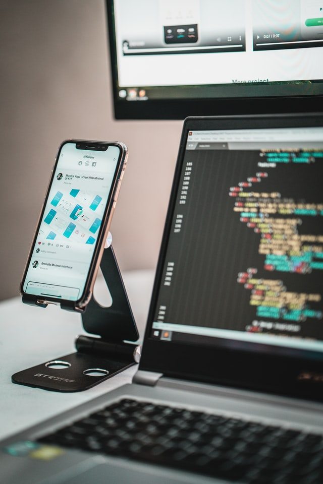

Som študent plniaci si sny ktorý si hľadá prácu
 Narodil som sa na Slovensku a v súčasnosti študujem na Bilingválnom gymnáziu v Čadci. Medzi moje záujmy patria počítače, počítačová bezpečnosť a tvorba webov.
Na gymnáziu som v štvrtom ročníku z piatich. Hlavu mám plnú nápadov pre webové stránky a dalšie projekty. Jediná vec ktorá my chýba je práca. To je dôvod prečo som vytvoril túto stránku. Chcem vám ukázať moje schopnosti. Ak hľadáte niekoho kto vie spraviť profesionálnu webstránku tak som to ja. Ukážky mojej práce ktoré vás zaujmú nájdete v sekcí projekty. Taktiež si môžete pozrieť moje certifikáty.
V prípade že ste tiež študentom s radosťou pomôžem aj vám. Kontaktujte ma so svojou otázkou a rád vám ju zodpoviem.
Niekto si môže myslieť, že mi chýbajú skúsenosti. Celkom tomu rozumiem, no nie je to pravda. Spolupracoval som na viacerých projektoch vo viacerých odboroch informatiky. Pracoval som s pythonom, javascriptom, arduinom a dalšími. Vytvoril som robota, ktorý sa vedel sám pohybovať a navigovať v komplikovanom teréne. Medzi dalšie veci, ktoré som vytvoril, patrí napríklad robotická ruka. Časti pre ňu som si nadizajnoval vo Fusion 360. Potom som ich vytlačil a pospájal. Bol to jeden z mojich prvých projektov, ktorý odštartoval moju informatickú kariéru. Ak ste sa dočítali, až sem budem rád, ak ma aj kontaktujete.